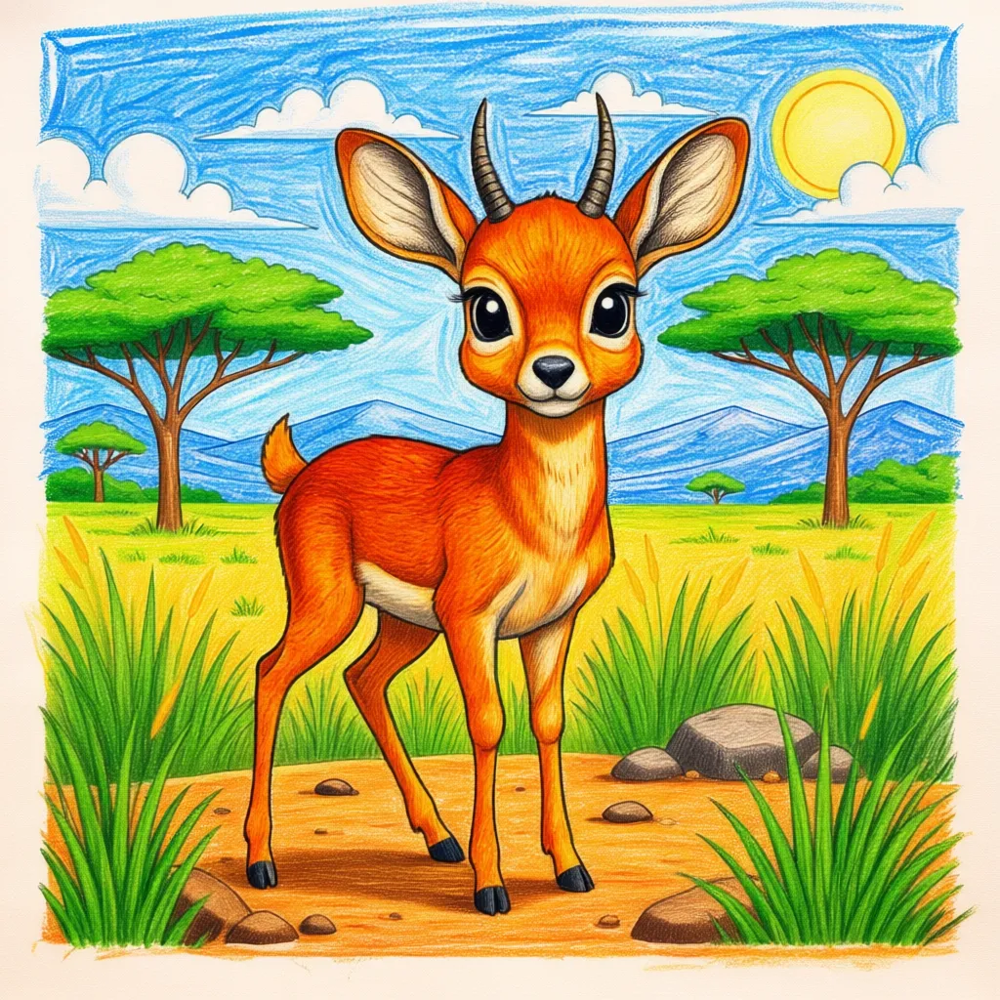

Dik - Dik
Madoqua spp

Key Characteristics
- he Dik-Dik is one of the smallest antelopes in Africa, usually only about 12-16 inches tall—about the size of a rabbit!
- They are named for the distinctive 'zik-zik' or 'dik-dik' alarm sound they make when they feel scared.
- Dik-Diks are monogamous, meaning they mate for life and live in small pairs.
Peculiar Facts (Fun Facts!)
- They use tear glands near their eyes to mark their territory with a scent.
- They are so tiny that sometimes they can be mistaken for baby animals, but they are fully grown!
- Dik-Diks rarely need to drink water, as they get most of their hydration from the leaves and berries they eat.